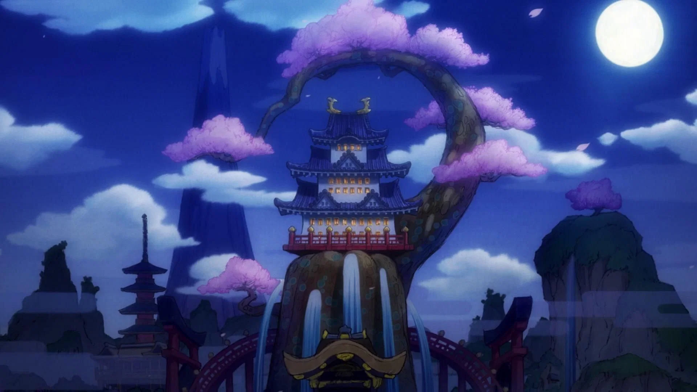
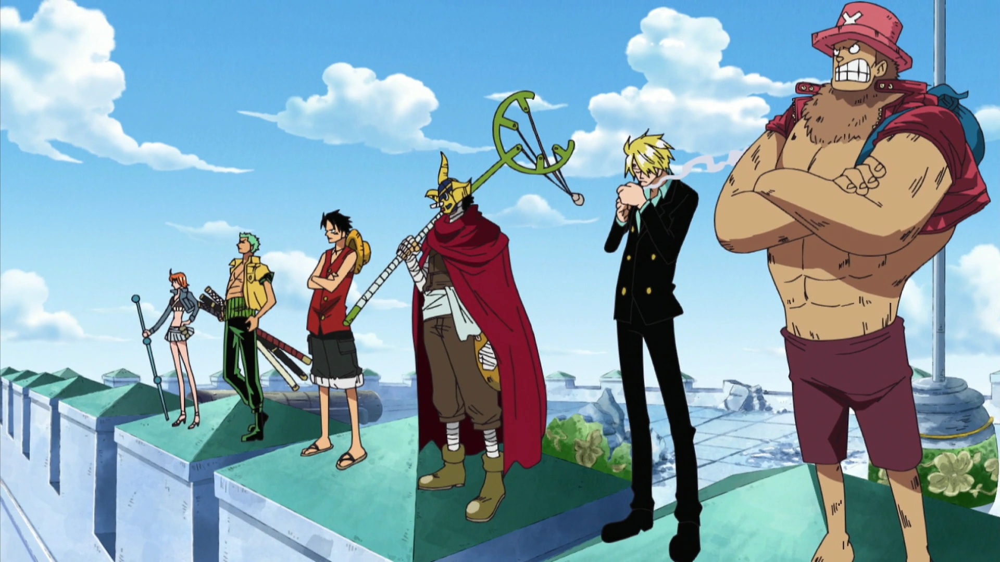

THE. STRAWHAT. CREW.
WELCOME TO STRAW HAT FAMILY ADVENTURE!
Luffy's journey begins in his small hometown of Foosha Village, where he sets out to sea to find the legendary treasure, One Piece. From East Blue to the Grand Line, he sails across dangerous seas, determined to reach the final island, Raftel, and become the Pirate King.
I AM
GONNA BE
THE KING
OF
PIRATES
I AM
GONNA BE
THE KING
OF
PIRATES
ABOUT THE CREW
The Straw Hat Pirates are more than just a crew—they’re a family bound by loyalty, trust, and shared dreams. No matter the challenges, they stand together, supporting each other with unwavering love, making everyone feel like they belong.

If I can't even protect my captain's dream, then whatever ambition I
have is worthless.

Wealth, fame, power. The man who had acquired everything in this
world, the Pirate King, Gol D. Roger. My treasure? It’s yours if you
want it. Search for it! I left everything in that place!
-
Gold D. Roger
WHAT ARE YOU WAITING FOR?
WANO ARC
MARINFORD ARC

ENIESLOBBY ARC
